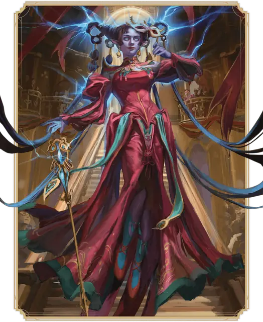

Чародей
Sorcerer

Основная характеристика Харизма
Кость хитов К6 за уровень Чародея
Хиты за уровень 1к6 (или 4) + ваш модификатор Телосложения (суммарно минимум 1)
Владение спасбросками Телосложение и Харизма
Владение навыками Выберите два: Запугивание, Обман, Проницательность, Религия, Тайная магия или Убеждение
Владение оружием Простое оружие
Тренированность с доспехами Нет
Начальное снаряжение Выберите А или Б:
(А) Копьё, 2 Кинжала, Магическая фокусировка (кристалл), Набор исследователя подземелий и 28 ЗМ;
или (Б) 50 ЗМ
| Уровень | Бонус владения | Классовые умения | Очки чародейства | Заговоры | Подготовленные заклинания | Ячейки заклинаний на уровень заклинаний: 1 | Ячейки заклинаний на уровень заклинаний: 2 | Ячейки заклинаний на уровень заклинаний: 3 | Ячейки заклинаний на уровень заклинаний: 4 | Ячейки заклинаний на уровень заклинаний: 5 | Ячейки заклинаний на уровень заклинаний: 6 | Ячейки заклинаний на уровень заклинаний: 7 | Ячейки заклинаний на уровень заклинаний: 8 | Ячейки заклинаний на уровень заклинаний: 9 |
|---|---|---|---|---|---|---|---|---|---|---|---|---|---|---|
| 1 | +2 | Сотворение заклинаний, Врождённое чародейство | - | 4 | 2 | 2 | - | - | - | - | - | - | - | - |
| 2 | +2 | Источник магии, Метамагия | 2 | 4 | 4 | 3 | - | - | - | - | - | - | - | - |
| 3 | +2 | Подкласс Чародея | 3 | 4 | 6 | 4 | 2 | - | - | - | - | - | - | - |
| 4 | +2 | Увеличение характеристик | 4 | 5 | 7 | 4 | 3 | - | - | - | - | - | - | - |
| 5 | +3 | Чародейское восстановление | 5 | 5 | 9 | 4 | 3 | 2 | - | - | - | - | - | - |
| 6 | +3 | Умение подкласса | 6 | 5 | 10 | 4 | 3 | 3 | - | - | - | - | - | - |
| 7 | +3 | Воплощение чародейства | 7 | 5 | 11 | 4 | 3 | 3 | 1 | - | - | - | - | - |
| 8 | +3 | Увеличение характеристик | 8 | 5 | 12 | 4 | 3 | 3 | 2 | - | - | - | - | - |
| 9 | +4 | — | 9 | 5 | 14 | 4 | 3 | 3 | 3 | 1 | - | - | - | - |
| 10 | +4 | Метамагия | 10 | 6 | 15 | 4 | 3 | 3 | 3 | 2 | - | - | - | - |
| 11 | +4 | — | 11 | 6 | 16 | 4 | 3 | 3 | 3 | 2 | 1 | - | - | - |
| 12 | +4 | Увеличение характеристик | 12 | 6 | 16 | 4 | 3 | 3 | 3 | 2 | 1 | - | - | - |
| 13 | +5 | — | 13 | 6 | 17 | 4 | 3 | 3 | 3 | 2 | 1 | 1 | - | - |
| 14 | +5 | Умение подкласса | 14 | 6 | 17 | 4 | 3 | 3 | 3 | 2 | 1 | 1 | - | - |
| 15 | +5 | — | 15 | 6 | 18 | 4 | 3 | 3 | 3 | 2 | 1 | 1 | 1 | - |
| 16 | +5 | Увеличение характеристик | 16 | 6 | 18 | 4 | 3 | 3 | 3 | 2 | 1 | 1 | 1 | - |
| 17 | +6 | Метамагия | 17 | 6 | 19 | 4 | 3 | 3 | 3 | 2 | 1 | 1 | 1 | 1 |
| 18 | +6 | Умение подкласса | 18 | 6 | 20 | 4 | 3 | 3 | 3 | 3 | 1 | 1 | 1 | 1 |
| 19 | +6 | Эпический дар | 19 | 6 | 21 | 4 | 3 | 3 | 3 | 3 | 2 | 1 | 1 | 1 |
| 20 | +6 | Апофеоз чародейства | 20 | 6 | 22 | 4 | 3 | 3 | 3 | 3 | 2 | 2 | 1 | 1 |
как персонаж 1-го уровня
Получите все атрибуты из таблицы «Ключевые атрибуты Чародея».
Получите умения Чародея 1-го уровня; они перечислены в таблице «Умения Чародея».
как мультиклассовый персонаж
Получите Кость хитов из таблицы «Ключевые атрибуты Чародея».
Получите умения Чародея 1-го уровня; они перечислены в таблице «Умения Чародея». Ознакомьтесь с правилами мультиклассирования, чтобы определить доступные вам ячейки заклинаний.
Уровень 1: Сотворение заклинаний
Вы можете сотворять заклинания, опираясь на свою врождённую магию. Правила сотворения заклинаний смотрите в соответствующей статье. Следующая информация описывает, как вы используете эти правила с заклинаниями Чародея.
Заговоры. Вы знаете четыре заговора на ваш выбор из списка заклинаний Чародея. Рекомендуются Свет, Фокусы, Чародейский выброс и Электрошок. Каждый раз, когда вы получаете уровень Чародея, вы можете заменить один из заговоров, полученных от этого умения, другим заговором Чародея на ваш выбор.
Когда вы достигаете 4-го и 10-го уровней Чародея, вы изучаете ещё по одному заговору из списка заклинаний Чародея на ваш выбор, как показано в столбце «Заговоры» в таблице «Умения Чародея».
Ячейки заклинаний. В таблице «Умения Чародея» указано, сколько у вас есть ячеек заклинаний для сотворения заклинаний 1-го уровня и выше. Вы восстанавливаете все потраченные ячейки, когда завершаете Долгий отдых.
Подготовленные заклинания 1-го уровня и выше. Вы подготавливаете список заклинаний 1-го уровня и выше, которые вы можете сотворять с помощью этого умения. Для начала выберите два заклинания 1-го уровня из списка заклинаний Чародея. Рекомендуются Огненные ладони и Обнаружение магии.
Количество заклинаний в вашем списке увеличивается по мере получения уровней Чародея, как указано в столбце «Подготовленные заклинания» таблицы «Умения Чародея». Когда это число увеличивается, выбирайте дополнительные заклинания Чародея до тех пор, пока их количество не сравняется с числом, указанным в таблице. Каждое выбираемое заклинание может быть только такого уровня, для которого у вас есть ячейка заклинаний. Например, если вы Чародей 3-го уровня, ваш список подготовленных заклинаний может включать шесть заклинаний Чародея 1-го или 2-го уровня в любой комбинации.
Если другое умение Чародея даёт вам заклинания, которые у вас всегда подготовлены, то эти заклинания не учитываются в общем списке подготавливаемых вами с помощью этого умения заклинаний; в остальных отношениях для вас они считаются заклинаниями Чародея.
Замена подготовленных заклинаний. Каждый раз, когда вы получаете уровень Чародея, вы можете заменить одно заклинание в вашем списке другим заклинанием Чародея, для которого у вас есть ячейка заклинаний.
Заклинательная характеристика. Заклинательной характеристикой для ваших заклинаний Чародея является Харизма.
Заклинательная фокусировка. Вы можете использовать Магическую фокусировку в качестве Заклинательной фокусировки для ваших заклинаний Чародея.
Уровень 1: Врождённое чародейство
Некое событие в вашем прошлом оставило на вас неизгладимую метку, наполнив вас кипящей магией. Бонусным действием вы можете высвободить эту магию на 1 минуту, в течение которой вы получаете следующие преимущества:
• Сл спасброска заклинаний для ваших заклинаний Чародея увеличивается на 1.
• Вы совершаете с Преимуществом броски атаки сотворяемыми вами заклинаниями Чародея.
Вы можете использовать это умение дважды, восстанавливая потраченные использования по завершению Долгого отдыха.
Уровень 2: Источник магии
Вы можете зачерпывать из источника магии внутри вас. Этот источник представлен Очками чародейства, позволяющими создавать различные магические эффекты.
У вас есть 2 Очка чародейства; вы получаете больше Очков чародейства с получением уровней, как показано в столбце «Очки чародейства» таблицы «Умения Чародея». У вас не может быть больше Очков чародейства, чем указано в таблице для вашего уровня. Вы восстанавливаете все потраченные Очки чародейства, когда завершаете Долгий отдых.
Вы можете тратить ваши Очки чародейства для работы приведённых ниже вариантов, а также других умений, использующих эти Очки, таких, как Метамагия.
Преобразование ячеек заклинаний в Очки чародейства. Вы можете потратить ячейку заклинаний, чтобы получить Очки чародейства в количестве, равном уровню ячейки (действий не требуется).
Создание ячеек заклинаний. Бонусным действием вы можете превратить непотраченные Очки чародейства в одну ячейку заклинаний. Следующая таблица показывает стоимость создания ячейки заклинаний определённого уровня и минимальный уровень Чародея, требующийся чтобы создать такую ячейку. Вы не можете создать ячейку заклинаний выше 5-го уровня.
Все созданные этим умением ячейки заклинаний исчезают, когда вы завершаете Долгий отдых.
| Уровень ячейки | Стоимость в Очках чародейства | Мин. Уровень Чародея |
| 1 | 2 | 2 |
| 2 | 3 | 3 |
| 3 | 5 | 5 |
| 4 | 6 | 7 |
| 5 | 7 | 9 |
Уровень 2: Метамагия
Ваша магия течет внутри вас, и оттого вы можете изменять свои заклинания под свои нужды. Вы получаете два варианта Метамагии из раздела Варианты Метамагии на ваш выбор. Эти варианты можно использовать для временного изменения сотворяемых вами заклинаний. Чтобы использовать вариант, вы должны потратить столько Очков чародейства, сколько он стоит.
При сотворении заклинания вы можете применить только один вариант Метамагии, если в описании варианта не сказано иначе.
Всякий раз, когда вы получаете уровень Чародея, можете заменить один из ваших вариантов Метамагии на тот, которого у вас нет.
Уровень 3: Подкласс Чародея
Вы получаете подкласс Чародея на ваш выбор. Подкласс — это специализация, которая даёт вам умения на определённых уровнях Чародея. Вы всегда получаете все умения подкласса, уровень которых не больше вашего уровня Чародея.
Уровень 4: Увеличение характеристик
Вы получаете черту Увеличение характеристик или другую черту на ваш выбор, требованиям которой вы соответствуете.
Уровень 5: Чародейское восстановление
Когда вы завершаете Короткий отдых, вы можете восстановить потраченные Очки чародейства, количеством не больше, чем половина вашего уровня Чародея (округляя вниз).
Как только вы используете это умение, вы не сможете сделать это снова, пока не завершите Долгий отдых.
Уровень 6: Умение подкласса
Вы получаете все умения подкласса Чародея 6-го уровня.
Уровень 7: Воплощение чародейства
Если у вас не осталось использований Врождённого чародейства, вы можете использовать это умение, если тем же Бонусным действием, которым оно активируется, потратите 2 Очка чародейства.
Кроме того, пока ваше Врождённое чародейство действует, при сотворении заклинания вы можете применить до двух ваших вариантов Метамагии.
Уровень 8: Увеличение характеристик
Вы получаете черту Увеличение характеристик или другую черту на ваш выбор, требованиям которой вы соответствуете.
Уровень 10: Метамагия
Вы получаете ещё два варианта Метамагии.
Уровень 12: Увеличение характеристик
Вы получаете черту Увеличение характеристик или другую черту на ваш выбор, требованиям которой вы соответствуете.
Уровень 14: Умение подкласса
Вы получаете все умения подкласса Чародея 14-го уровня.
Уровень 16: Увеличение характеристик
Вы получаете черту Увеличение характеристик или другую черту на ваш выбор, требованиям которой вы соответствуете.
Уровень 17: Метамагия
Вы получаете ещё два варианта Метамагии.
Уровень 18: Умение подкласса
Вы получаете все умения подкласса Чародея 18-го уровня.
Уровень 19: Эпический дар
Вы получаете черту из категории Эпических даров или другую черту по вашему выбору, требованиям которой вы соответствуете. Рекомендуется Дар межпространственного перемещения.
Уровень 20: Апофеоз чародейства
Пока ваше Врождённое чародейство действует, вы можете применять один вариант Метамагии в каждый ваш ход, не тратя на это Очки чародейства.
Подклассы
Аберрантное чародейство
Овладейте противоестественной псионической силой
Чужеродное влияние обвило своими щупальцами ваш разум, наделяя вас псионической силой. С помощью этой силы вы можете теперь касаться других разумов и изменять мир вокруг себя. Будет ли эта сила сиять в вас, как маяк надежды? Или вы будете наводить ужас на тех, кто ощутит укол вашего разума?
Возможно, эту псионическую энергию донёс до вас психический ветер с Астрального плана, или же вы подверглись искажающему воздействию Дальних пределов. А может быть, вам была подсажена личинка свежевателя разума, но ваше превращение в иллитида так и не произошло; теперь псионическая сила личинки принадлежит вам. Как бы вы ни приобрели эту силу, ваш разум охвачен ею.
Уровень 3: Псионические заклинания
С момента достижения вами уровня Чародея, указанного в следующей таблице, у вас всегда будут подготовлены соответствующие этому уровню заклинания.
| Уровень Чародея | Заклинания |
| 3 | Диссонирующий шепот, Обнаружение мыслей, Расщепление разума, Руки Хадара, Умиротворение |
| 5 | Голод Хадара, Послание |
| 7 | Вызов аберрации, Черные щупальца Эварда |
| 9 | Ментальная связь Рэри, Телекинез |
Уровень 3: Телепатическая речь
Вы можете установить телепатическую связь между вашим разумом и разумом другого существа. Бонусным действием выберите одно существо, видимое вами в пределах 30 футов от вас. Вы и выбранное существо можете телепатически общаться друг с другом, пока расстояние между вами не больше миль в количестве, равном вашему модификатору Харизмы (минимум 1 миля). Чтобы вы могли понимать друг друга, каждый из вас должен мысленно говорить на языке, известном другому.
Длительность этой телепатической связи в минутах равна вашему уровню Чародея. Она заканчивается раньше, если вы установите этим умением связь с другим существом.
Уровень 6: Псионическое чародейство
Когда вы сотворяете заклинание 1-го уровня и выше от вашего умения Псионические заклинания, можете сотворить его обычным способом, потратив ячейку заклинаний, или потратив Очки чародейства в количестве, равном уровню заклинания. Если вы сотворяете такое заклинание, тратя Очки чародейства, то для него не требуются Вербальный и Соматический компоненты, и не требуются Материальные компоненты, если они не расходуются заклинанием и не имеют указанной в заклинании цены.
Уровень 6: Психическая защита
Вы получаете Сопротивление Психическому урону, и вы совершаете с Преимуществом спасброски для избежания или прекращения состояний Очарованный и Испуганный.
Уровень 14: Откровение во плоти
Вы можете высвободить аберрантную истину, скрытую внутри вас. Бонусным действием вы можете потратить 1 Очко чародейства или больше, чтобы магическим образом преобразовать ваше тело на 10 минут. За каждое потраченное вами Очко чародейства вы выбираете одно из следующих преимуществ, эффекты которых действуют до окончания преобразования.
Адаптация к водной среде. Вы получаете Скорость плавания в два раза больше вашей Скорости, и вы можете дышать под водой. На вашей шее или за ушами вырастают жабры; ваши ладони становятся перепончатыми или на вашем теле вырастают извивающиеся реснички.
Блестящий полет. Вы получаете Скорость полёта, равную вашей Скорости, и можете парить. Когда вы летите, ваша кожа блестит от слизи или потустороннего света.
Видеть невидимое. Вы видите всех Невидимых существ в пределах 60 футов от вас, кроме находящихся за Полным укрытием. Ваши глаза чернеют или обращаются в извивающиеся сенсорные усики.
Червеобразное перемещение. Ваше тело вместе со всем несомым и носимым снаряжением становится скользким и податливым. Вы можете перемещаться в пространстве шириной всего в 1 дюйм, и вы можете потратить 5 футов перемещения, чтобы освободиться от немагических пут или состояния Схваченный.
Уровень 18: Искажающий взрыв
Вы можете выпустить искривляющую пространство аномалию. Действием Магия вы можете телепортироваться в незанятое пространство, видимое вами в пределах 120 футов от вас. Сразу после вашего исчезновения каждое существо в пределах 30 футов от пространства, где вы находились, должно совершить спасбросок Силы против вашей Сл спасброска заклинаний. При провале существо получает 3к10 Силового урона и притягивается по прямой к пространству, где вы находились, останавливаясь в максимально близком к нему незанятом пространстве. При успехе существо только получает половину этого урона.
Как только вы используете это умение, вы не сможете сделать это снова, пока не завершите Долгий отдых; вы можете потратить 5 Очков чародейства, чтобы восстановить использование Искажающего взрыва (действий не требуется).
Драконье чародейство
Дышите магией драконов
Ваша врождённая магия проистекает из дара дракона. Возможно, древний дракон перед смертью завещал часть своей магической силы вам или вашему предку.
Возможно, вы впитали магию из наполненного силой драконов места. Может быть, вы прикоснулись к напитанному драконьей силой сокровищу из хранилища дракона. Или же дракон был вашим предком.
Уровень 3: Драконьи заклинания
С момента достижения вами уровня Чародея, указанного в следующей таблице, у вас всегда будут подготовлены соответствующие этому уровню заклинания.
| Уровень Чародея | Заклинания |
| 3 | Дыхание дракона, Приказ, Смена обличья, Хроматический шар |
| 5 | Полёт, Ужас |
| 7 | Магический глаз, Очарование монстра |
| 9 | Вызов дракона, Знание легенд |
Уровень 3: Драконья устойчивость
Магия в вашем теле проявляет физические черты вашего драконьего дара. Ваш максимум Хитов увеличивается на 3; он также увеличивается на 1 на каждом последующем уровне Чародея.
Кроме того, некоторые части вашего тела покрыты чешуей, похожей на драконью. Если вы не носите доспехов, ваш базовый Класс Защиты равен 10 + ваши модификаторы Ловкости и Харизмы.
Уровень 6: Родство со стихией
Ваша драконья магия имеет сродство с тем или иным типом урона из используемых драконами. Выберите один из этих типов: Кислота, Огонь, Холод, Электричество или Яд.
У вас есть Сопротивление этому типу урона. Кроме того, когда вы сотворяете заклинание, наносящее урон этого типа, можете добавить ваш модификатор Харизмы к одному броску урона этого заклинания.
Уровень 14: Крылья дракона
Бонусным действием вы можете создать у себя за спиной драконьи крылья. Крылья существуют в течение 1 часа или пока вы не развеете их (действий не требуется). Пока они существуют, у вас есть Скорость полёта 60 футов.
Как только вы используете это умение, вы не сможете сделать это снова, пока не завершите Долгий отдых; вы можете потратить 3 Очка чародейства, чтобы восстановить его использование (действий не требуется).
Уровень 18: Дракон-спутник
Вы можете сотворять Вызов дракона без Материального компонента. Вы также можете один раз сотворить его без ячейки заклинаний, и вы восстанавливаете возможность сделать это по завершении Долгого отдыха.
Каждый раз, когда вы начинаете сотворять это заклинание, вы можете изменить его так, чтобы оно не требовало Концентрации. В таком случае длительность этого заклинания составит 1 минуту.
Заводное чародейство
Управляйте космическими силами порядка
Космическая сила порядка наполнила вас магией. Эта мощь исходит от Механуса или подобного ему мира — от Плана бытия, чьё устройство подобно эффективности часового механизма. Вы или кто-то из ваших предков, возможно, оказались впутаны в махинации модронов, упорядоченных существ, населяющих Механус. Возможно, ваш предок даже принимал участие в Великом марше модронов. Как бы сила порядка ни появилась внутри вас, она может показаться странной другим, но для вас это часть огромной славной системы.
Уровень 3: Заводные заклинания
С момента достижения вами уровня Чародея, указанного в следующей таблице, у вас всегда будут подготовлены соответствующие этому уровню заклинания.
Кроме того, обратитесь к следующей таблице; совершите по ней бросок или выберите сами, как будет проявляться ваша связь с порядком при сотворении ваших заклинаний Чародея.
| к6 | Проявление |
| 1 | Позади вас парят призрачные шестерёнки. |
| 2 | В ваших глазах вращаются стрелки часов. |
| 3 | Ваша кожа сияет медным блеском. |
| 4 | По вашей коже ползут уравнения и геометрические объекты. |
| 5 | Ваша Заклинательная фокусировка временно принимает форму Крошечного часового механизма. |
| 6 | Вы и те, на кого воздействует ваша магия, слышат тиканье механизмов или звон часов. |
Уровень 3: Восстановление баланса
Ваша связь с планом абсолютного порядка позволяет вам уравновешивать моменты хаоса. Когда видимое вами в пределах 60 футов от вас существо собирается совершить с Преимуществом или с Помехой бросок к20, вы можете Реакцией убрать влияние Преимущества и Помехи на этот бросок.
Вы можете использовать эту способность количество раз, равное вашему модификатору Харизмы (минимум один раз), и вы восстанавливаете все потраченные использования, когда завершаете Долгий отдых.
Уровень 6: Бастион закона
Вы можете защитить существо силой великого уравнения существования, наделяя его мерцающим щитом порядка.
Действием Магия вы можете потратить от 1 до 5 Очков чародейства, чтобы создать магическую защиту вокруг себя или другого существа, видимого вами в пределах 30 футов от вас. Защита представлена костями к8; их число равно количеству потраченных на её создание Очков чародейства. Когда защищённое существо получает урон, оно может потратить любое количество этих костей, бросить их и уменьшить получаемый урон на сумму бросков.
Защита действует, пока вы не завершите Долгий отдых или пока не используете это умение снова.
Уровень 14: Транс упорядоченности
Вы получаете возможность настроить своё сознание на бесконечные вычисления Механуса. Бонусным действием вы можете на 1 минуту войти в такое состояние. В течение этого времени Преимущество не влияет на броски атаки по вам, и каждый раз, когда вы совершаете Тест к20, можете при выпадении на к20 результата «9» или меньше считать, что выпало «10».
Как только вы используете это умение, вы не сможете сделать это снова, пока не завершите Долгий отдых; вы можете потратить 5 Очков чародейства, чтобы восстановить его использование (действий не требуется).
Уровень 18: Заводная кавалькада
Вы вызываете духов порядка, чтобы мгновенно устранить беспорядок вокруг вас. Действием Магия вы вызываете духов в исходящем от вас 30-футовом Кубе. Духи выглядят как модроны или другие Конструкты на ваш выбор. Духи неосязаемы и неуязвимы; они создают все перечисленные ниже эффекты внутри Куба, после чего исчезают. Как только вы используете это умение, вы не сможете сделать это снова, пока не завершите Долгий отдых; вы можете потратить 7 Очков чародейства, чтобы восстановить его использование (действий не требуется).
Лечение. Духи восстанавливают до 100 Хитов, распределяемых по вашему выбору среди находящихся в Кубе существ.
Рассеивание. Все заклинания 6-го уровня и ниже заканчиваются на выбранных вами находящихся в Кубе существах и объектах.
Ремонт. Все повреждённые объекты, целиком находящиеся в Кубе, мгновенно восстанавливаются.
Чародейство дикой магии
Дайте волю хаотической магии
Ваша магия исходит от диких сил хаоса, лежащих в основе мироздания. Вероятно, вы или ваш предок подверглись воздействию грубой магии; возможно, через планарный портал, ведущий в Лимбо или на Стихийные планы. Может быть, вы были благословлены феей или отмечены демоном. Или же ваша магия может быть случайностью вашего рождения, без видимой причины. Каково бы ни было её происхождение, эта магия бурлит внутри вас, готовая вырваться наружу.
Уровень 3: Всплеск дикой магии
Сотворение вами заклинаний может высвободить потоки неукротимой магии. Один раз за ход вы можете бросить 1к20 сразу после сотворения заклинания Чародея с ячейкой заклинаний. Если на кости выпадет «20», совершите бросок по таблице Всплески дикой магии, чтобы создать магический эффект.
Если этот эффект — заклинание, то оно слишком дикое, чтобы применять к нему вашу Метамагию.
Уровень 3: Волны хаоса
Вы можете манипулировать самим хаосом; перед совершением Теста к20 вы можете применить Преимущество на этот бросок. Как только вы это сделаете, вы не сможете сделать это снова, пока не завершите Долгий отдых или не сотворите заклинание Чародея с ячейкой заклинаний.
Когда вы восстанавливаете возможность использовать это умение, сотворяя заклинание Чародея с ячейкой заклинаний, вы автоматически совершаете бросок по таблице Всплески дикой магии.
Уровень 6: Искривление удачи
Вашей дикой магией вы можете вмешиваться в судьбы. Сразу после того, как другое видимое вами существо бросит к20 для Теста к20, вы можете Реакцией потратить 1 Очко чародейства, чтобы бросить 1к4 и применить результат к этому броску к20 как бонус или штраф (на ваш выбор).
Уровень 14: Контролируемый хаос
Вы получаете толику контроля над всплесками вашей дикой магии. Каждый раз, когда вы совершаете бросок по таблице Всплески дикой магии, можете совершить два броска и использовать любой из результатов.
Уровень 18: Укрощённый всплеск дикой магии
Сразу после сотворения заклинания Чародея с ячейкой заклинаний вы можете не совершать бросок по таблице Всплески дикой магии, а выбрать эффект самостоятельно. Вы можете выбрать любой эффект из таблицы, кроме последней строки; если выбранный эффект требует броска, совершите его.
Вы не можете использовать это умение снова, пока не завершите Долгий отдых.
Чародейство чаропламени
Используйте мощь чистой, сырой магии
Ваши врождённые силы проистекают от источника самой магии: Плетения. Ваша связь с ним — это редкая особенность, известная как чаропламя. Чаропламя вырывается из вас сияющими всплесками грубой сырой магии. Вы можете использовать эту магию, чтобы лечить союзников, сжигать врагов и поглощать могущественные заклинания. Носители чаропламени имеют склонность к путешествиям. Многие из них перемещаются между космополитичных поселений — как те, что стоят по Побережью мечей — используя свою магию во имя добра. Иные учатся понимать странные их способности, исследуя странные же земли, от уничтоженных магией пустошей Анауроха до затронутых божественными руками диких земель Древних империй. Куда бы ни отправлялись Чародеи чаропламени, они высоко ценятся фракциями, интересующимися тайной магией — такими, как Арфисты, Красные волшебники или Культ дракона.
Уровень 3: Прорыв чаропламени
Когда вы тратите хотя бы 1 Очко чародейства в рамках совершения действия Магия или Бонусного действия в ваш ход, вы можете выпустить один из следующих магических эффектов на ваш выбор. Вы можете делать это только раз в ход.
Поддерживающие огни. Вы или видимое вами в пределах 30 футов от вас существо получаете Временные хиты в количестве, равном 1к4 + ваш модификатор Харизмы.
Сияющее пламя. Одно видимое вами в пределах 30 футов от вас существо получает 1к4 урона Огнём или Излучением (на ваш выбор).
Уровень 3: Заклинания чаропламени
С момента достижения вами уровня Чародея, указанного в следующей таблице, у вас всегда будут подготовлены соответствующие этому уровню заклинания.
| Уровень Чародея | Заклинания |
| 3 | Лечение ран, Малое восстановление, Направляющий снаряд, Палящий луч |
| 5 | Аура живучести, Рассеивание магии |
| 7 | Огненный щит, Огненная стена |
| 9 | Высшее восстановление, Небесный огонь |
Уровень 6: Поглощение заклинаний
У вас всегда подготовлено Контрзаклинание. Кроме того, каждый раз, когда цель проваливает спасбросок против вашего Контрзаклинания, вы восстанавливаете 1к4 Очков чародейства.
Уровень 14: Освоенное чаропламя
Ваш Прорыв чаропламени усиливается: урон Сияющего пламени увеличивается до 1к8, и вы добавляете ваш уровень Чародея к количеству Временных хитов, даруемых Поддерживающими огнями.
Уровень 18: Корона чаропламени
Когда вы используете Врождённое чародейство, можете изменить его, наполняя себя сущностью чаропламени и получая нижеперечисленные преимущества на время действия этого Врождённого чародейства.
Как только вы используете это умение, вы не сможете сделать это снова, пока не завершите Долгий отдых; вы можете потратить 5 Очков чародейства, чтобы восстановить его использование (действий не требуется).
Горящая жизнь. Один раз в ход, когда по вам попадают броском атаки, вы можете потратить Кости хитов в количестве не большем, чем ваш модификатор Харизмы (минимум 1 кость): бросьте эти кости и уменьшите получаемый от этой атаки урон на сумму бросков.
Полёт. Вы получаете Скорость полёта 60 футов и можете парить.
Избежание заклятий. Если вы попадаете под действие заклинания или магического эффекта, который позволяет вам совершить спасбросок, чтобы получить только половину урона, вместо этого вы не получаете вовсе никакого урона если преуспеваете в спасброске, и только половину если проваливаете его. Вы не можете использовать эту особенность, если у вас есть состояние Недееспособный.
Теневое чародейство
Подчиняйте вашей воле тьму и сам рок
Ваша внутренняя магия проистекает из самых смутных и непроницаемых сил Царства Теней или из других средоточий сверхъестественной тьмы. Возможно, ваша родословная тянется от обитающей в таком месте сущности — или, возможно, вы были преображены под воздействием злобной энергии теневого дракона. Ваша магия теней позволяет вам управлять темнотой, скорбями и несмертием.
Уровень 3: Сила тени
Вы получаете следующие преимущества:
Глаза тьмы. Вы получаете Тёмное зрение дальностью 120 футов и Слепое зрение дальностью 10 футов. Кроме того, если сотворяемое вами заклинание создаёт область Темноты, вы можете видеть сквозь эту Темноту.
Сила могилы. Если ваши Хиты опускаются до 0, но вы не убиты мгновенно, вы можете совершить спасбросок Харизмы (Сл 5 + полученный урон). Если вы преуспеете, ваши Хиты становятся равны не 0, а сумме ваших модификатора Харизмы и уровня Чародея. Как только вы преуспеете в этом спасброске, вы не можете использовать это преимущество, пока не завершите Долгий отдых.
Уровень 3: Заклинания теней
С момента достижения вами уровня Чародея, указанного в следующей таблице, у вас всегда будут подготовлены соответствующие этому уровню заклинания.
| Уровень Чародея | Заклинания |
| 3 | Бесследное передвижение, Нанесение ран, Порча, Тьма |
| 5 | Голод Хадара, Необнаружимость |
| 7 | Воображаемый убийца, Высшая невидимость |
| 9 | Заражение, Сотворение |
Уровень 6: Звери дурных знамений
Вы умеете призвать сотканное из тьмы воющее существо, преследующее ваших врагов. Вы можете потратить 3 Очка чародейства, чтобы Бонусным действием сотворить Вызов зверя без траты ячейки, без Материальных компонентов и необходимости подготавливать заклинание. Вызванное существо выглядит как зверь, состоящий из теней, и враги совершают с Помехой спасброски против ваших заклинаний, пока находятся в пределах 5 футов от этого существа.
Каждый раз, когда вы сотворяете это заклинание, можете изменить его так, что оно не будет требовать поддержания Концентрации. В таком случае длительность заклинания становится равна 1 минуте, и оно оканчивается раньше, если вы снова сотворяете это заклинание.
Уровень 14: Хождение по теням
Пока вы находитесь в области Тусклого света или Темноты, вы можете Бонусным действием телепортироваться в видимое вами в пределах 120 футов незанятое пространство, также находящееся в области Тусклого света или Темноты.
Уровень 18: Форма абсолютной тени
Когда вы используете Врождённое чародейство, вы можете принять сумрачный облик, получая нижеперечисленные преимущества на время действия этого Врождённого чародейства или пока вы не прекратите их (действий не требуется).
Как только вы используете это умение, вы не сможете сделать это снова, пока не завершите Долгий отдых; вы можете потратить 6 Очков чародейства, чтобы восстановить его использование (действий не требуется).
Теневая устойчивость. Вы обладаете Сопротивлением всему урону за исключением Силового урона и урона Излучением.
Бестелесное перемещение. Вы можете перемещаться через других существ и объекты, как через Труднопроходимую местность. Если вы заканчивает ваш ход внутри существа или объекта, то получаете 1к10 Силового урона.
Описание
Чародеи владеют врожденной магией, запечатанной в самой их сущности. Некоторые Чародеи не знают, откуда происходит их сила; другие прослеживают её к странным событиям в своей истории или истории семьи. Дар Чародея могут пробудить дриады при рождении ребенка, благословение дракона или удар молнии среди ясного неба. Это может быть и дар божества, контакт со странной магией другого Плана бытия или внезапное понимание внутреннего устройства мироздания. Каким бы ни было происхождение, результатом становится неизгладимая метка Чародея, бурлящая магия, которая может передаваться из поколения в поколение.
Чародеи не учатся магии; грубая, волнующая сила магии - часть их сущности. Необходимое для Чародея искусство - научиться обуздывать и направлять эту врожденную магию, что позволяет Чародею открывать новые и ошеломляющие способы высвобождения своей силы. По мере того, как Чародей овладевает своей врождённой магией, он становится более восприимчив к её источнику, развивая особые ему присущие способности.
Чародеи встречаются редко. В некоторых семьях в каждом поколении рождается ровно один Чародей, но в большинстве случаев талант чародейства проявляется по счастливой случайности. Получившие эту магическую силу вскоре обнаруживают, что она не любит сидеть тихо. Магия Чародея хочет, чтобы ею владели.